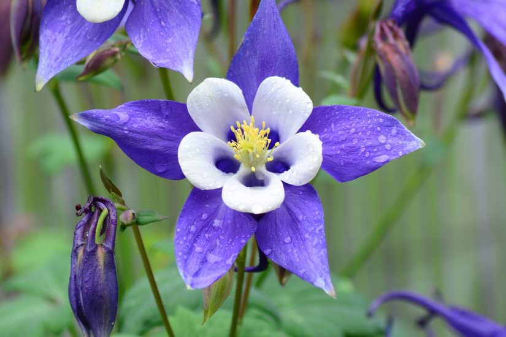
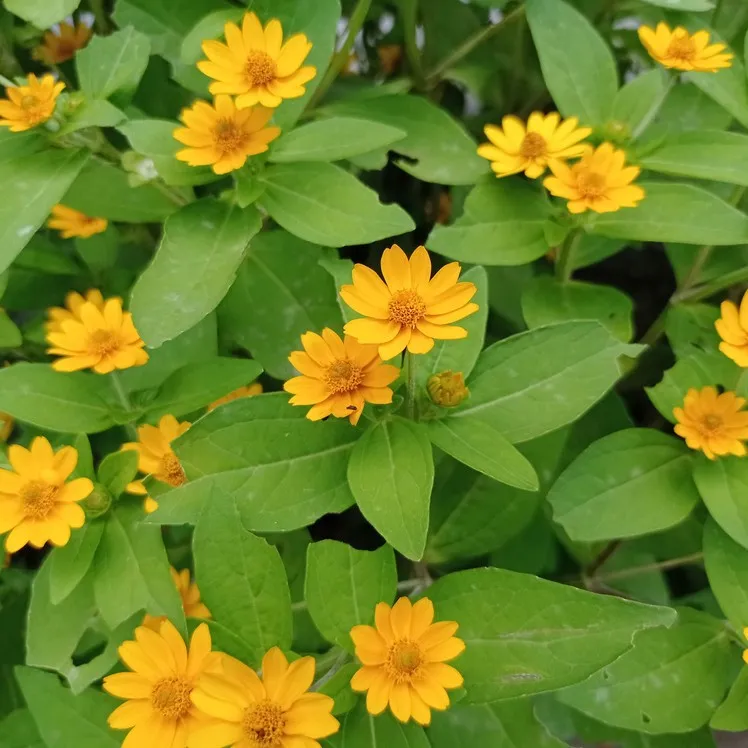
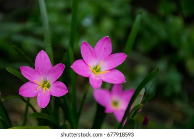

The Mountain Bloom thrives in Cavite’s cooler highlands, bringing vibrant color to the mountainsides. Its petals open brightly in the morning sun and provide nectar for bees and butterflies. The flower symbolizes strength and endurance because it survives harsh conditions at high altitudes. Local farmers often notice it growing near streams, which helps maintain healthy soil. Its delicate fragrance adds a peaceful aroma to the mountain air. Many photographers and hikers enjoy capturing its natural beauty in photographs. Overall, the Mountain Bloom is admired for both its resilience and elegance.

The Cavite Daisy is a simple yet elegant wildflower commonly seen in open meadows and gardens. It blooms in clusters, creating a white and yellow carpet across the fields. This flower represents purity, innocence, and new beginnings, making it a favorite in local festivals. Bees and other pollinators are often seen visiting its petals during the day. Cavite Daisy adapts well to both sunlight and partial shade, making it a resilient plant. Its gentle beauty attracts nature enthusiasts, who often pick it for floral arrangements. The daisy is not only visually appealing but also contributes to local biodiversity.

The Firefly Flower is a glowing wonder often found in quiet fields of Cavite. Its petals seem to sparkle under the evening light, resembling tiny fireflies. The flower represents hope, peace, and the quiet beauty of nature. At night, it naturally illuminates small areas, creating magical scenery for hikers. It attracts nocturnal insects that are drawn to its soft glow. Local communities value it for its calming presence and natural charm. Firefly Flowers are rare, making sightings a memorable experience for nature lovers and photographers alike.